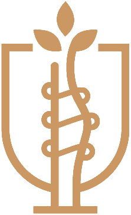
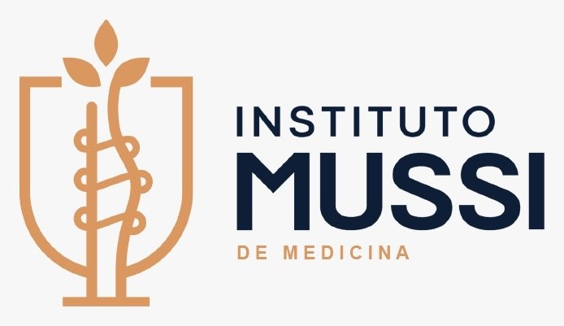
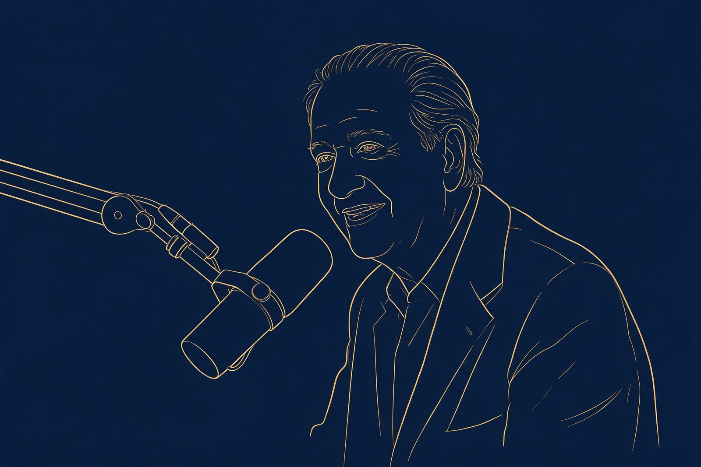

Marca
Identidade, posicionamento, narrativa e linguagem capazes de sustentar consistência.

Instituto MussiA próxima etapa não é produzir mais comunicação. É transformar reputação, conhecimento, tecnologia e presença em uma estrutura institucional de longo prazo.

Identidade, narrativa, processos, produção, mídia, tecnologia e equipe começaram a operar como partes de uma mesma estrutura.
Identidade, posicionamento, narrativa e linguagem capazes de sustentar consistência.
Calendário, produção, responsabilidades e processos para reduzir improviso.
Conteúdo e mídia trabalhando sob uma lógica comum de presença e demanda.
CRM, automações, dados e tecnologia formando uma camada proprietária.
O influenciador de milhões de seguidores perde espaço para o executivo e o acadêmico com vivência real de mercado. Conteúdo de educação utilitária — bastidores, análise técnica — converte mais do que entretenimento puro.
São esses executivos que reúnem as pessoas capacitadas para sustentar o projeto e trazer leitura de mercado — para que a liderança decida com base em dado atual, não em achismo. É exatamente esse lugar que o Instituto Mussi já vem construindo.
A expansão não substitui o Instagram. Ela atribui funções diferentes a diferentes pontos de contato.
Descoberta, relacionamento e recorrência.
DescobertaProfundidade, histórias, busca e autoridade.
ProfundidadeConversas longas e continuidade.
ProfundidadeCaptura de intenção.
IntençãoDescoberta em novos públicos.
DescobertaAmbiente institucional e conversão.
PróprioPrimeira resposta, dúvidas e agendamento sem fila de espera.
PróprioRelacionamento e inteligência própria.
PróprioAmplificação controlada.
AmplificaçãoUm conteúdo curto pode iniciar a relação. Histórias, entrevistas, explicações e conteúdos longos criam caminhos para que a pessoa conheça melhor a instituição antes de uma decisão de maior complexidade.
Primeiro contato.
A marca passa a ser familiar.
Conteúdo aprofunda contexto.
Reputação ganha substância.
Busca ativa por solução.
Continuidade além da campanha.
O Dr. Mussi concentra décadas de experiência, histórias, relações e memória institucional. O podcast cria um formato recorrente para registrar esse patrimônio e permitir que sua participação continue relevante mesmo quando sua presença operacional diminuir.
Conversas longas, histórias e explicações que continuam disponíveis depois da gravação.

Patrocínios, parceiros e projetos especiais podem constituir uma camada econômica futura, condicionada a audiência, consistência, mercado e conformidade — nunca como promessa.
A operação passa a funcionar como um ciclo: pesquisa, pauta, captação, conteúdo central, desdobramentos, distribuição, mídia, dados, CRM e aprendizado.
É nessa capacidade que entram estrutura ampliada de social media, fotografia, audiovisual, edição, estratégia, mídia e tecnologia.
A comunicação deixa de trabalhar apenas a demanda do paciente e começa a explorar também reputação institucional, utilização da estrutura e uma futura frente B2B de relacionamento com médicos.
Paciente → conteúdo → confiança → Instituto → relacionamento.
Médico → reputação → proposta institucional → Hospital. Frente sujeita a validação comercial.
O termo “ativo” é utilizado aqui em sentido estratégico e econômico, não como classificação contábil.
O horizonte é reduzir dependência de uma única pessoa, liderança, plataforma, algoritmo ou fonte de aquisição — enquanto Instituto e Hospital acumulam força própria de marca.
Não são pacotes de posts. São níveis diferentes de estrutura, distribuição e responsabilidade.
Consolidação da operação, marca, conteúdo, processos e presença.
Novos canais, formatos e aumento progressivo da capacidade de produção.
Podcast, distribuição ampliada, equipe adicional, mídia em escala e a tecnologia própria do Instituto.
Instituto + Hospital + canais + arquitetura de marca + frente B2B + estrutura institucional ampliada.
Valores de referência para a discussão estratégica. A composição final deve validar operação, mídia, tributação e estrutura adicional antes da contratação.
Estrutura consolidada e operação estabilizada.
Novos canais entram quando a base consegue sustentá-los.
Produção e distribuição passam a operar em escala.
Hospital, Instituto e B2B entram no mesmo horizonte estratégico.
O investimento deixa de ser o ponto de partida. Ele passa a ser consequência da estrutura que a instituição decide ativar.
Cada nível soma-se ao anterior. Valores de referência para a discussão estratégica; a composição final valida operação, mídia, tributação e estrutura antes da contratação.
Valores de referência para a discussão estratégica. A composição final deve validar operação, mídia, tributação e estrutura adicional antes da contratação.